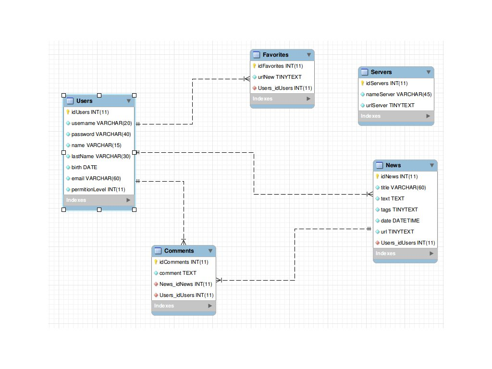

Read Me - Social News
Nome: Douglas Detoni
Grupo: Não possuo número. Realizei o trabalho sozinho.
Funcionalidades Implementadas:
Base de dados com capacidade para armazenar Utilizadores, Noticias, Comentarios,
Favoritos e Sevidores de notícias externos. Os Utilizadores são divididos em 3
níveis de permissão.
API para busca de notícias por conta de servidores externos, de modo a possibilitar
uma rede social de noticias. A API segue o protocolo especificado no enunciado do
trabalho.
Interface de adição e visualização das notícias, implementada com CSS e HTML. Ainda
é uma versão pobre em relação ao que se espera de um resultado final, contudo, abrange
os requisitos esperados como por exemplo a listagem das últimas notícias inseridas.
Foi implementada uma estrutura de Painel do Utilizador, onde é possível, no momento,
somente adicionar notícias.
Também foram implementadas função como comentários, favoritos. Essas funções levam em consideração
o nível de permição que o usuário tem sobre o sistema. Também é possível apagar e editar comentários,
notícias e tags.
Somente usuários com permição de administrador podem adicionar servidores externos, assim como
importar notícias dos mesmo para agregar ao site.
Notas Adicionais:
O web service encontra-se hospedado no serviço Qlix, com o endereço
de www.socialnews.qlix.com.br .
Existem 3 usuários cadastrados, seus usernames são respectivamente, admin, editor, reader. Ambos possuem
a mesma senha que é: 123456
Banco de Dados:
